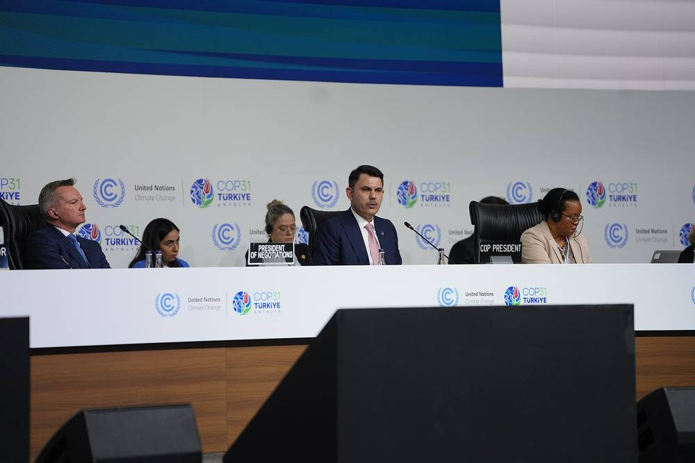

COP31 대표결정문 불발, 17년 만에 합의 실패

튀르키예 안탈리아 총회가 예정보다 이틀 늦은 23일 새벽 끝났다. 화석연료 전환 문구에서 갈렸고, 정의로운 전환 작업프로그램은 연장됐다.
튀르키예 안탈리아에서 열린 제31차 유엔기후변화협약 당사국총회(COP31)가 11월 23일 오전 1시(한국 시각)께 대표결정문 없이 끝났다. 폐막 예정일인 20일보다 이틀 늦었다. 기후에너지환경부는 당사국총회가 주요 대응 방향에 관한 포괄적 합의에 실패한 것은 2009년 코펜하겐 총회 이후 17년 만이라고 23일 밝혔다.
의장국 튀르키예와 협상의장국 호주가 마련한 결정문 초안에는 1.5도 초과의 규모·기간 최소화, 전기화 확대, 기후재원 확대가 담겼다. 화석연료에서 벗어나는 전환을 문구에 넣을지를 두고 당사국 의견이 끝내 갈렸다. 감축 작업프로그램을 2027년 이후에도 이어 갈지도 결론을 내지 못했다. 전지구적 이행점검과 어떻게 이을지를 두고 선진국과 개도국이 맞섰고, 이 의제는 2027년 파리협정 당사국회의로 넘어갔다.
정의로운 전환 작업프로그램(시민사회 등이 참여해 공정한 전환 경로를 논의하는 틀)은 연장하기로 했다. 다만 각국의 전환 이행을 돕는 정의로운 전환 메커니즘은 기구와 기능을 정하지 못해 다음 회기에서 다시 논의한다. 적응 분야에서는 벨렝 적응지표 59개의 측정 방법을 2027년까지 만들 전문가 36명 태스크포스 구성에 합의했다. 2035년까지 적응재원을 최소 3배로 늘리려는 노력의 기준선과 이행 경로는 합의하지 못했다.
한국 대표단은 김성환 기후에너지환경부 장관이 수석대표를 맡았고, 총회에는 역대 가장 많은 10만여 명이 참석했다. 정부는 2035년까지 세계 최종 에너지 소비에서 전력 비중을 35%로 늘리는 '글로벌 전기화 서약'에 11월 11일 이름을 올렸다. 다음 총회인 제32차 당사국총회는 2027년 11월 에티오피아 아디스아바바에서 열린다.
시민에너지 관점
나라끼리의 합의는 17년 만에 무너졌지만, 한국은 이번 총회에서 2035년까지 전력 비중을 35%로 높이겠다는 서약에 이름을 올렸다. 그만큼 늘려야 할 재생에너지 전기는 국제 협상을 기다리지 않고 마을 지붕과 공공부지에서 지금 지을 수 있다. 총회가 정의로운 전환 논의를 이어 가기로 한 것도 전환의 부담과 이익을 지역이 함께 나눠야 한다는 요구가 그만큼 크다는 뜻이다. 정부는 전기화 서약에 맞춰 주민·시민 소유 재생에너지 목표를 숫자로 내놓고, 시민은 우리 동네 햇빛발전에 직접 출자하자.
출처: 기후에너지환경부 2026-11-23 보도참고자료 「제31차 유엔기후변화협약 당사국총회 폐막」(기후에너지국제협력팀 등 8개 부처·청, 붙임 PDF 13쪽) 원문 보기
출처: 기후에너지환경부 2026-11-18 보도자료 「2035년까지 전 세계 전기화 35% 목표, 라이즈 아시아로 이행 협력 본격화」 원문 보기